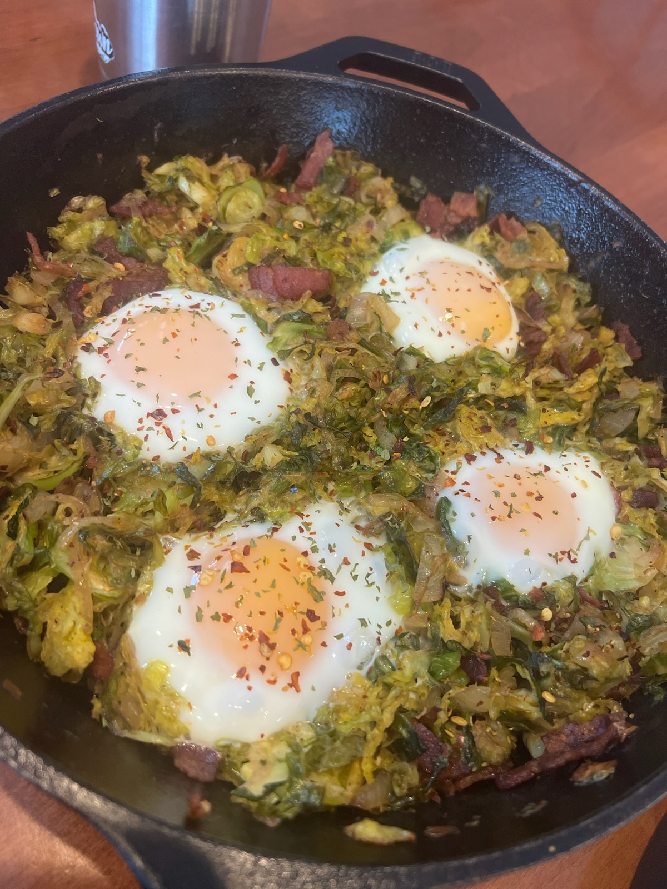

Brussels Sprout & Bacon Hash with Eggs

Description
My family said this was worth a shot so I am putting it here in the hopes I make it.
I will update this when I get there!
Ingredients
- 500 grams brussel sprouts
- 1 medium onion thinly sliced
- 8-10 slices bacon
- 1/4 cup vegetable or chicken stock
- 1 tsp dijon musturd
- 1 tbsp apple cider vinegar
- 1/2 tsp black pepper
- 1 tbsp fresh parsley, chopped
- 1/2 tsp chilli flakes
Directions
- Trim the brussels and shred by cutting them into thin slices.
- Cook bacon in oven proof skillet until crisp. Then remove and cut into
small pieces. Set aside.
- Cook onion in bacon grease (removing excess grease if needed) 8-10 minutes
or until soft and golden.
- Add the brussels to the skillet and stir well. Add the stock, mustard, apple
cider vinegar and black pepper. Let cook for about 6 minutes or until the brussels
are tender and slightly golden. Stir in the chopped bacon.
- Create 4 wells in the mixture with a spoon. crack an egg in each. Cook by either
covering pan for 5-7 minutes or placing it in the oven at 350 f for 8 minutes.
- Top with fresh parsley or chilli flakes to serve.
Home Page